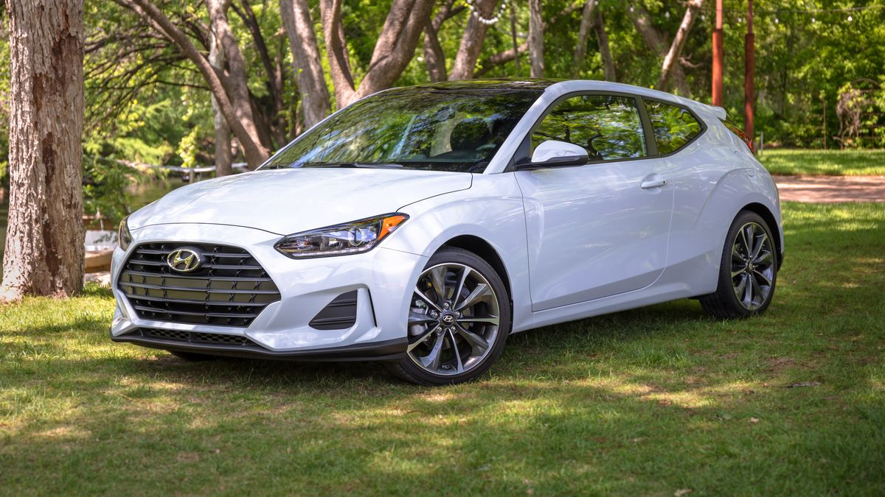
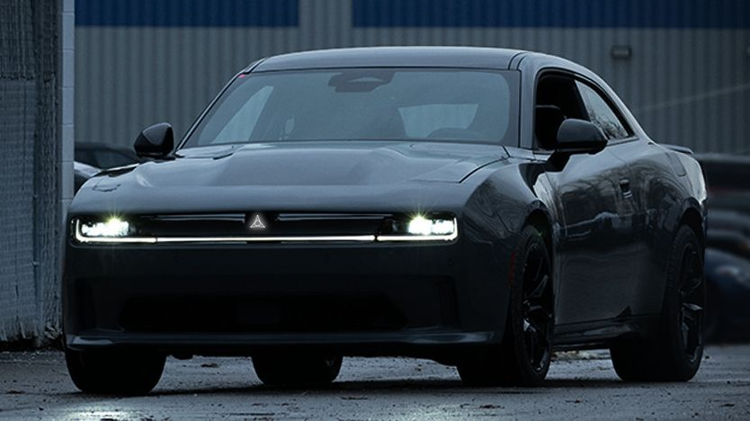
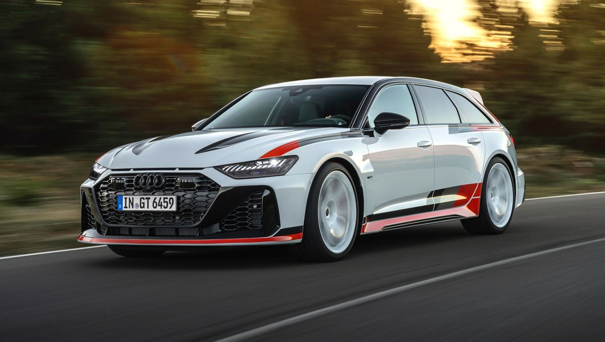
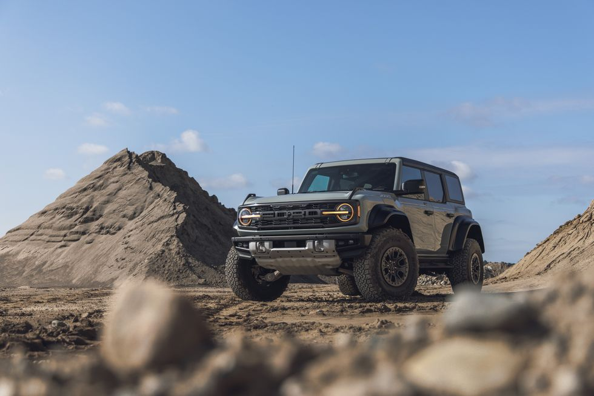
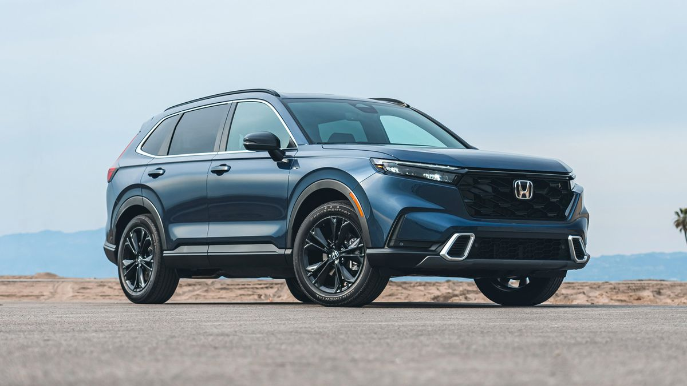
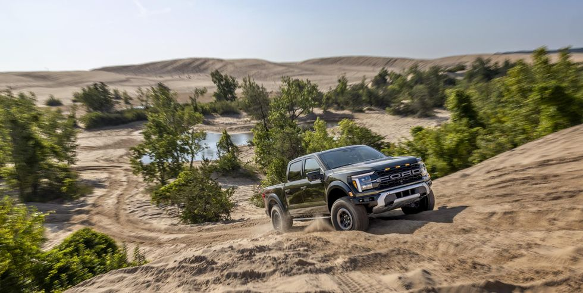
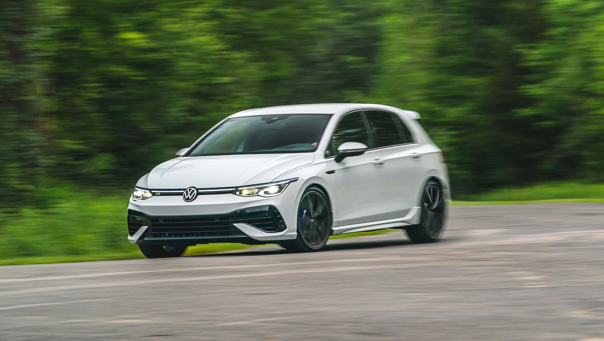

How it all started
I remember when i first put my hand on the first car magazine. they used to come with the news papers every month &
the annual one come at the end of the year
once i get the magazine i get lost in it, imagining myself to drive each car and which one would suit me the most
learning about how good the car is didn't facinate me as much as how good the car look, it can be a very bad car when it comes to quality but its shape
is just a *chef kiss* like the Jeep Wrangler for example
But one thing i can put my mind into it is the old classic cars are my favourite, but sadly they won't be able to perform good for an everyday use.
That's why i am willing to collect some of my fav once i earn enough money. but for now let's talk a look at my 1st car that i fall in love with & also my
my current car collection i am willing to choose from the day i am ready to buy my first car ever
The first car i fel in love with
THE FIRST 3-DOOR CAR IN THE WORLD. This was the title that took my attention and a photo of an orange hatchback car with its 3 doors open
glowing in the bottom of the page
Hyundai volester,this was its name, hunted my mind for next few days until i saw it with the exact color in the town street that's when i said to myself
-11 year old me- this going to be my future car.
Although as i explore more i became more interested in other models, this car still hold a place in my heart.

My current favourite cars
- ALFA ROMEO STELVIO QUADRIFOGLIO

- DODGE CHARGER

- AUDI RS6 AVANT GT
The picture says it all.

- FORD BRONCO RAPTOR
This car looks like a dream to me. A dream i pray to come true

- HONDA CRV

- FORD F150 RAPTOR
I think this car fits perfect with me now as a site engineer. It just goes perfectly with the sand and desert where i spend most my time.
It also makes who ever ride it looks like a total badass

- VW GOLF R
the sight of this car on the road makes me know for sure that the driver is car addict and also has a superior taste.

VISIT ME IN 3 YEARS